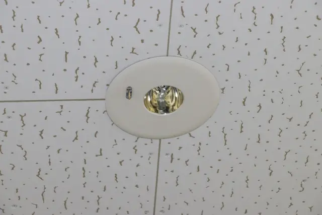

非常用照明は、停電や災害時に避難経路を確保するために設置が義務付けられている重要な設備です。
建物の用途や規模によって設置基準が定められており、適切な状態を維持することが求められます。
また、経年劣化やバッテリーの寿命により、点灯不良や照度不足が発生することもあります。そのまま放置してしまうと、法令上の指摘や安全性の低下につながる可能性があります。
当社では、現場状況を確認したうえで、必要な新設・交換工事について分かりやすくご案内いたします。
※停電・災害時に非常用照明が果たす役割を分かりやすく解説した動画です。
非常用照明は「いざという時」に確実に点灯することが求められます。定期的な点検と、劣化した器具の早めの交換が、建物利用者の安全を守ります。

新規開業・用途変更に伴う非常用照明の設置に対応。建物の基準に合わせて適切に施工します。
不点灯・照度不足・バッテリー劣化した器具を交換。点検指摘への対応もお任せください。
現地の状況を確認し、必要な工事内容を無理のない形でご提案。法令対応もサポートします。